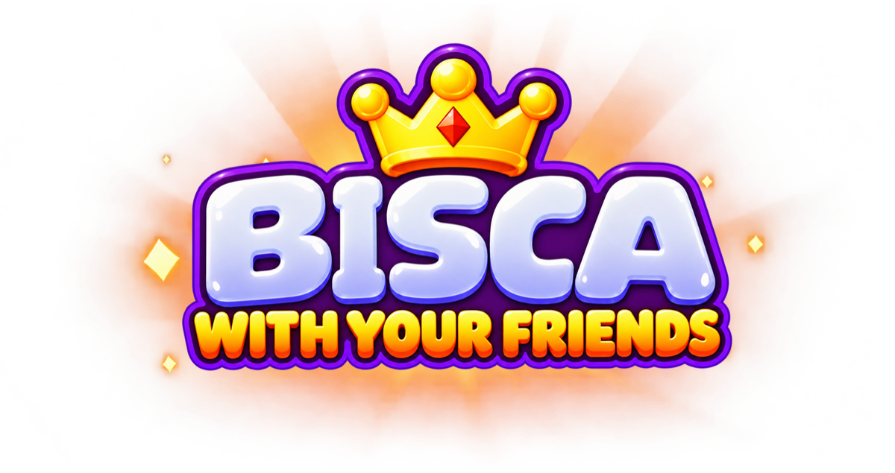

Un posto per gli amici
Crea una lobby privata e condividi il codice. La chat vocale facoltativa ti permette di parlare mentre giochi.
UN TAVOLO. I TUOI AMICI.

Crea una lobby privata, invita gli amici e ritrova il piacere di giocare insieme. Oppure fai pratica in una partita contro i bot.
Gioca dal browser Scopri BISCA ↓IL TUO MODO DI GIOCARE
Crea una lobby privata e condividi il codice. La chat vocale facoltativa ti permette di parlare mentre giochi.
Gioca in singleplayer contro i bot. Puoi iniziare come ospite, senza registrarti con un indirizzo email.
Personalizza il tuo profilo con avatar e dorsi delle carte e segui i tuoi progressi nella classifica stagionale.
RESTIAMO IN CONTATTO
Per domande, problemi tecnici o segnalazioni, scrivi allo sviluppatore.
matteostoroni02@gmail.com ↗BISCA include controlli per segnalare e bloccare altri giocatori. Puoi consultare l’informativa sulla privacy e le istruzioni per eliminare il tuo account.
Informativa sulla privacy ↗Eliminazione dell’account ↗